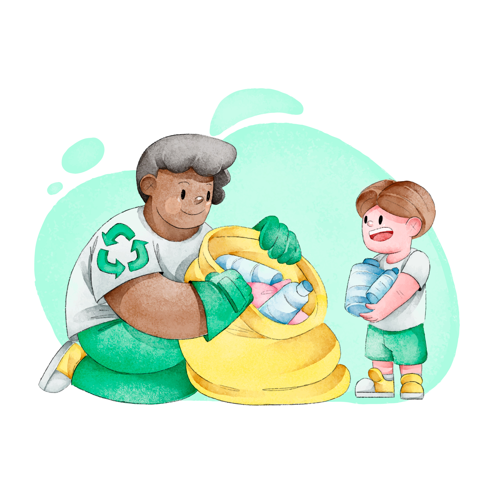

Perhatikan pola makan Anda dan pastikan untuk mengonsumsi makanan
bergizi yang kaya akan vitamin, mineral, dan serat. Hindari makanan
yang tinggi lemak jenuh, gula tambahan, dan garam berlebihan untuk
menjaga kesehatan jantung dan sistem pencernaan Anda.
selengkapnya
Menjaga Kebersihan

Pentingnya menjaga kebersihan diri dan lingkungan sekitar tidak
bisa diabaikan. Dengan rutin mencuci tangan, membersihkan rumah, dan
menjaga kebersihan pribadi, Anda dapat mencegah penyebaran penyakit
dan infeksi yang berbahaya.
selengkapnya